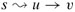

|
|
< Day Day Up > |
|
To prove the algorithms in this chapter correct, we shall appeal to several properties of shortest paths and relaxation. We state these properties here, and Section 24.5 proves them formally. For your reference, each property stated here includes the appropriate lemma or corollary number from Section 24.5. The latter five of these properties, which refer to shortest-path estimates or the predecessor subgraph, implicitly assume that the graph is initialized with a call to INITIALIZE-SINGLE-SOURCE(G, s) and that the only way that shortest-path estimates and the predecessor subgraph change are by some sequence of relaxation steps.
Triangle inequality (Lemma 24.10)
For any edge (u, v) ∈ E, we have δ(s, v) ≤ δ(s, u) + w(u, v).
Upper-bound property (Lemma 24.11)
We always have d[v] ≥ δ(s, v) for all vertices v ∈ V , and once d[v] achieves the value δ(s, v), it never changes.
No-path property (Corollary 24.12)
If there is no path from s to v, then we always have d[v] = δ(s, v) = ∞.
Convergence property (Lemma 24.14)
If  is a shortest path in G for some u, v ∈ V, and if d[u] = δ(s, u) at any time prior to relaxing edge (u, v), then d[v] = δ(s, v) at all times afterward.
Path-relaxation property (Lemma 24.15)
If p = 〈v0, v1,..., vk〉 is a shortest path from s = v0 to vk, and the edges of p are relaxed in the order (v0, v1), (v1, v2),..., (vk-1, vk), then d[vk] = δ(s, vk). This property holds regardless of any other relaxation steps that occur, even if they are intermixed with relaxations of the edges of p.
Predecessor-subgraph property (Lemma 24.17)
Once d[v] = δ(s, v) for all v ∈ V, the predecessor subgraph is a shortest-paths tree rooted at s.
|
|
< Day Day Up > |
|